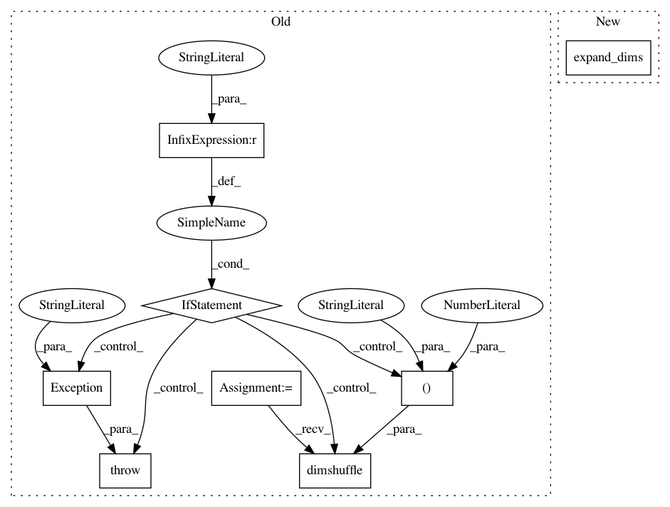

4e5348c5cab9842d8508375d3b6bf06b97d9db50,keras/layers/core.py,Siamese,get_output_dot,#Siamese#Any#,1802
Before Change
return s
def get_output_dot(self, train=False):
if K._BACKEND != "theano":
raise Exception(""dot" merge mode will only work with Theano.")
from theano import tensor as T
l1 = self.get_output_at(0, train)
l2 = self.get_output_at(1, train)
output = T.batched_tensordot(l1, l2, self.dot_axes)
output = output.dimshuffle((0, "x"))
return output
def get_output_cos(self, train=False):
if K._BACKEND != "theano":
After Change
l1 = self.get_output_at(0, train)
l2 = self.get_output_at(1, train)
output = K.batch_dot(l1, l2, self.dot_axes)
output = K.expand_dims(output, -1)
return output
def get_output_cos(self, train=False):
l1 = self.get_output_at(0, train)
In pattern: SUPERPATTERN
Frequency: 3
Non-data size: 8
Instances
Project Name: keras-team/keras
Commit Name: 4e5348c5cab9842d8508375d3b6bf06b97d9db50
Time: 2016-03-23
Author: eder@macbook.com
File Name: keras/layers/core.py
Class Name: Siamese
Method Name: get_output_dot
Project Name: keras-team/keras
Commit Name: 4e5348c5cab9842d8508375d3b6bf06b97d9db50
Time: 2016-03-23
Author: eder@macbook.com
File Name: keras/layers/core.py
Class Name: Siamese
Method Name: get_output_cos
Project Name: keras-team/keras
Commit Name: 133699c2f33302e124d31811844a6f24decadcd6
Time: 2016-04-01
Author: eder@macbook.com
File Name: keras/engine/topology.py
Class Name: Merge
Method Name: call